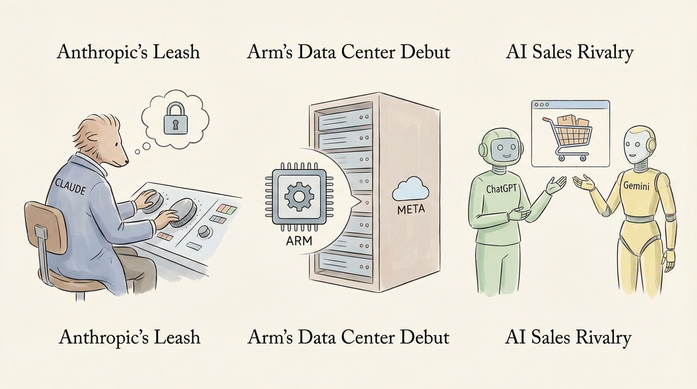

Openreach与Google Cloud AI合作，利用AI规划全光纤网络部署。
两克伴AIGC日报
2026-03-25 星期三

本期关注：Openreach与谷歌云AI扩大合作，以规划其全光纤部署、Epoch Biodesign完成1200万美元融资，以证明其尼龙回收酶可以大规模工作、OpenAI的Sora曾是您手机上最诡异的应用——现在它即将关闭、OpenAI CEO调整职责分工，筹备代号“Spud”的全新AI模型
📰 行业动态
Epoch Biodesign获得1200万美元融资，以证明其尼龙回收酶可规模化应用。
OpenAI关闭Sora应用，精简产品线为IPO做准备。
OpenAI CEO调整职责，专注于融资和数据中心建设，并开发新一代AI模型。
阿里巴巴推出Accio Work平台，为企业提供零配置的AI服务。
🔥 今日焦点
《AI热潮指数：AI走向战争》一文由Michelle Kim撰写，揭示了当前AI领域的紧张局势。文章指出，Anthropic与五角大楼在如何武器化Anthropic的AI模型Claude上产生争执，随后OpenAI以“机会主义且草率”的交易赢得了五角大楼的青睐。大量用户纷纷退出ChatGPT，伦敦爆发了迄今为止规模最大的反对AI的抗议活动。这一系列事件不仅凸显了AI技术应用的争议，也反映了AI领域竞争的激烈程度。
这一话题的重要性在于，它揭示了AI技术从研发到应用过程中所面临的伦理、安全和社会影响问题。Anthropic与五角大楼的争执以及OpenAI的交易，都表明了AI技术在军事领域的潜在应用引发了广泛的关注和担忧。此外，用户对ChatGPT的抵制和抗议活动，则反映了公众对AI技术可能带来的负面影响的认识加深。
阿斯利康与清华大学联合成立“人工智能药物研发联合研究中心”，标志着AI在新药研发领域的深入应用。AI不再仅仅是药物发现的工具，而是成为推动研发全流程的关键力量。该研究中心旨在利用AI发现新靶点、解析疾病机制，提高临床试验成功率，降低研发不确定性。
AI对药物研发的影响主要体现在三个方面：首先是效率提升，如清华AIR团队的DrugCLIP平台，实现了百万倍于传统方法的筛选速度；其次是科学发现路径的改变，从“假设驱动”转向“数据驱动”，减少认知盲区；最后是科学研究范式的变革，AI Agent的发展使得科研过程更加动态和前瞻。
Galtea，一家由巴塞罗那超级计算中心孵化而成的初创公司，近日成功筹集了320万美元资金，旨在帮助企业测试AI代理。该公司利用AI技术生成逼真的测试场景，以揭示AI代理在上线前可能出现的故障、幻觉、偏见和安全风险。此轮融资由42CAP领投，Mozilla Ventures参与。
这一举措对于AI领域具有重要意义。随着AI技术的广泛应用，AI代理的可靠性和安全性成为企业关注的焦点。Galtea的AI评估平台能够帮助企业提前发现并解决潜在问题，从而提高AI代理在实际应用中的表现。
📚 深度长文
本文探讨了Claude Code的最新进展——Auto模式，作为替代传统<code>--dangerously-skip-permissions</code>的新权限模式。该模式赋予Claude自主决策权限，并在执行前进行安全监控。Auto模式利用Claude Sonnet 4.6进行安全审查，确保每个动作符合用户请求，并阻止超出任务范围、针对不可信基础设施或受恶意内容驱动的动作。这一创新为AI开发者提供了更安全、高效的权限管理方案，具有显著深度和独特见解。阅读本文，AI从业者将深入了解Auto模式的工作原理及其在提升系统安全性方面的价值。
---
OpenAI的Sora项目被砍，标志着人工智能领域的一次重大转折。文章深入剖析了Sora项目失败的原因，揭示了技术发展背后的复杂因素。作者Jennifer Mossalgue指出，Sora项目在技术实现、市场定位和团队管理等方面存在诸多问题，导致其最终走向失败。
文章通过分析Sora项目的具体案例，揭示了人工智能项目在研发过程中可能遇到的风险和挑战。作者认为，Sora项目的失败并非偶然，而是技术、市场、团队等多方面因素共同作用的结果。文章强调，在人工智能领域，技术创新与市场需求的匹配至关重要，同时，团队管理、战略规划等软实力也不容忽视。
📄 重点论文
**核心贡献**: 提出了一种模块化架构，该架构受生物多能性的启发，其中未分化的智能体核心可以分化成专门的处理协议。
**与AI Agent的关联**: 为多智能体系统提供了一种灵活的架构，能够适应不同的交互范式和工具集成策略，对智能体研究和应用有重要价值。
**核心贡献**: 综述了设计和管理LLM智能体工作流的方法，这些工作流被视为智能体计算图（ACGs），并基于工作流结构的确定时间进行组织。
**与AI Agent的关联**: 为LLM智能体的工作流优化提供了理论框架，有助于提高智能体在复杂任务中的性能和效率。
**核心贡献**: 比较了两种通信协议：工具集成协议和智能体间委托协议，以优化复杂多智能体系统的任务编排。
**与AI Agent的关联**: 为智能体通信协议的选择提供了实证依据，有助于提高多智能体系统的协同效率和可靠性。
🛠️ 产品推荐
Clampd是一款AI安全防护工具，其核心功能是实时监测数据库操作，防止潜在的安全威胁。通过AI技术，Clampd能在10毫秒内识别并阻止危险命令，如DROP TABLE等，有效保障数据库安全。这款产品专为技术从业者设计，旨在解决数据库安全风险，为用户提供更加稳定、可靠的数据库环境。Clampd凭借其高效的AI能力和创新的安全机制，成为数据库安全防护的理想选择。
---
Lightless Labs Refinery是一款基于Rust语言的库和命令行工具，旨在实现多模型共识与综合。该产品通过迭代共识的方式，让多个模型对同一提示进行回答，并独立评估其他模型的回答。每轮迭代后，模型将原始提示、前一轮回答和评估结果反馈给其他模型，直至某一模型连续两轮获胜。该产品有效解决了AI模型间信息孤岛问题，提高了模型回答的一致性和准确性，为技术从业者提供了一种高效的多模型协同工作方式。
---
Travelwithsira.com是一款专注于航班预订的在线平台。该平台整合了100多家航空公司的航班信息，用户可轻松比较不同航班的票价，并得知最佳预订时机。此外，平台还具备AI智能助手功能，可通过对话形式为用户自动预订航班，极大提升预订效率和便捷性。Travelwithsira.com致力于为用户提供一站式航班预订解决方案，帮助用户节省时间和费用。